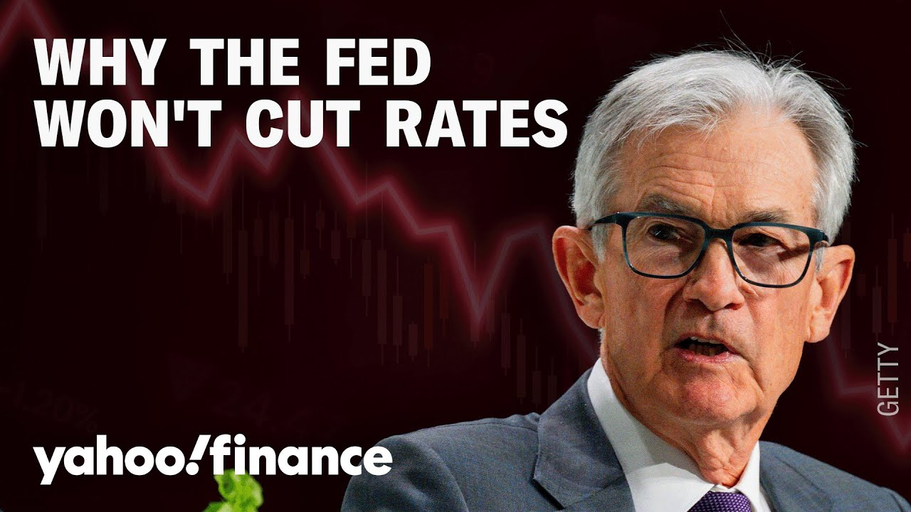

来B站一起耍【Global每日英语简报】
【美联储可能暂时不会降息的原因】
Summary: The video discusses why the Federal Reserve may delay rate cuts despite economic pressures, including rising jobless claims and political tensions. Analysts suggest the Fed remains cautious due to inflation concerns and aims to maintain independence, potentially leading to policy conflicts.
摘要： 本期视频探讨了尽管面临失业率上升和政治压力，美联储仍可能推迟降息的原因。分析指出，出于对通胀的担忧以及保持政策独立性的考量，美联储态度谨慎，这可能引发政策冲突。

⏱️ Estimated Reading Time: 9 min
Time now for today's strategy session.
现在是今天的策略会议时间。
In the latest sign of economic trouble, weekly jobless claims surged to 241,000.
最新经济困境的信号显示，每周失业救济金申请人数激增至24.1万。
That's more than expected and pushing bond yields lower.
这一数字超出预期，并压低了债券收益率。
Treasury Secretary Scott Bessant saying shorter-term treasuries like the 2-year are signaling to the Fed that it's time to cut.
财政部长斯科特·贝桑特表示，2年期等短期国债正在向美联储发出降息信号。
Joining us now is Bridge Carana, who is the Wellington Management Fixed Income Portfolio Manager.
现在加入我们的是惠灵顿管理公司固定收益投资组合经理布里奇·卡拉纳。
Great to have you here with us in studio.
很高兴你能来到演播室。
Okay. So, first let's just start on the comments from Treasury Secretary Besson because they have been putting a lot of pressure on the Fed to cut rates right now.
好的。首先，让我们从财政部长贝松的评论开始，因为他们一直在向美联储施压要求立即降息。
From what they're seeing in the 2-year, does that from your perspective also signal to the Fed that it's time to cut?
从他们观察到的2年期国债情况来看，这是否也向美联储发出了降息信号？
So, you know, whether or not it's time to cut or not, I think the Fed is probably going to be very resistant to cutting in the next few meetings.
所以，无论是否该降息，我认为美联储在接下来的几次会议上可能会非常抗拒降息。
And so, the market's pricing the Fed at about 60% chance of a cut in June.
因此，市场预计美联储6月降息的可能性约为60%。
And you know, I think that's much too high because this is a Fed that we'll remember is data dependent and the data is going to look pretty good over the next few months because we've front-run so much spending from tariffs.
我认为这一概率过高，因为美联储依赖数据，而未来几个月的数据可能看起来相当不错，因为我们已经提前消化了关税带来的大量支出。
And I think the second reason is is that, you know, the Fed wants to see the impact that the tariffs are going to have, the immigration policies on growth and inflation.
第二个原因是，美联储希望观察关税和移民政策对增长和通胀的影响。
And they think it's going to be lower growth.
他们认为增长会放缓。
They think it's going to be higher inflation.
他们认为通胀会上升。
And Chair Powell said, what you're supposed to do in that situation is focus on where you're further from target.
鲍威尔主席表示，在这种情况下，应该关注离目标更远的方面。
Well, they're a lot further from their inflation target than the employment target.
目前，通胀目标离他们的预期比就业目标更远。
And so, point being that I think they're going to actually lean in a more hawkish direction than the market anticipates.
因此，我认为他们实际上会比市场预期的更倾向于鹰派立场。
Now, to your point, that puts them in conflict with the Trump administration.
正如你所说，这将使他们与特朗普政府产生冲突。
And I think, you know, maybe an olive branch they could offer to the Treasury is to say, look, we're going to end quantitative tightening completely.
我认为，他们可以向财政部伸出橄榄枝，表示将完全结束量化紧缩。
You know, they're we have the debt ceiling getting figured out, but once that gets extended, maybe they could even go back to increasing their balance sheet slightly.
债务上限问题正在解决，但一旦延期，他们甚至可能小幅增加资产负债表。
So point being that maybe that's like the olive branch that they can offer and say, "Hey, look, you know, yeah, we're not ra we're not cutting rates as much as you want us to, but at least we're not selling bonds, you know, the way the way we had been."
也就是说，这可能是他们能提供的妥协：“虽然我们没有按你们希望的幅度降息，但至少我们没有像以前那样抛售债券。”
I hear you basically saying Fed funds rate whatever that's they're not going to make them cut.
我理解你的意思是，无论联邦基金利率如何，他们都不会被迫降息。
Uh to what extent is there a potential for a policy mistake in there where we do see the economy rolling over?
在这种情况下，政策失误导致经济下滑的可能性有多大？
Yeah, I I mean I I think the Fed is in a in a very tricky situation because their inflation's still above target and we're dealing with economic policies which do likely represent a worse growth in inflation trade-off.
是的，我认为美联储处境非常棘手，因为通胀仍高于目标，而当前的经济政策可能导致增长与通胀的权衡更加不利。
And so, you know, I do think that it they would rather make a policy mistake by cutting too late, particularly when they feel like they have a lot of room to bring it down compared to cutting too early and then reigniting inflation.
因此，我认为他们宁愿因降息过晚而犯错，尤其是在他们认为有较大降息空间的情况下，而不是过早降息重新推高通胀。
And I, you know, I do think, you know, Powell still has a year left.
而且，鲍威尔还有一年任期。
He doesn't want to be known as, you know, this century's Arthur Burns who cut rates too low and didn't beat inflation in the 70s.
他不想被称为本世纪的阿瑟·伯恩斯——那位在70年代降息过低却未能遏制通胀的美联储主席。
And I think his other other goal is really to establish Fed independence uh at least in his time as Fed chair.
我认为他的另一个目标是确保美联储的独立性，至少在他的任期内。
And so, you know, I do think that it does set up markets for a contentious relationship between the Fed and uh and Washington.
因此，我认为这确实可能导致美联储与华盛顿之间的关系紧张。
But um but you know, I think that's what we're going to live for for the next year.
但这就是我们未来一年要面对的局面。
And so, in the meantime, it's it's Fed Chair J. Pal and the FOMC, as Jaylen Herz would say, keeping the main thing the main thing.
与此同时，正如杰伦·赫兹所说，美联储主席鲍威尔和联邦公开市场委员会要“抓住重点”。
The main thing for them is this dual mandate of where inflation is at and then and making sure that there's price stability rather and then additionally maximum employment employment seems to be one of the areas that remains extremely gray here and and no pun intended but challenger gray and Christmas uh today talking about layoffs for the month of April hitting the highest tally for the month in five years and directly pointing out some of the effects of Doge as well within that.
他们的重点是双重使命：控制通胀和确保价格稳定，其次是实现最大就业。但就业数据仍非常模糊——恰如挑战者公司报告显示，4月裁员人数创五年同期新高，并直接指出部分影响来自多吉。
So, what should the Fed be looking for in their cues within the employment situation data, especially knowing how much of it is actually self-induced because of the cuts that were rolled forward by Doge?
那么，在就业数据中，美联储应该关注哪些信号？尤其是考虑到多吉提前实施的削减措施实际上人为造成了部分数据变化？
Yeah, I I mean, I think it's a great point.
是的，我认为这个问题很好。
You know, if we look, we get non-farm payrolls tomorrow, so that's their most important data point that they look for.
明天我们将公布非农就业数据，这是他们最关注的数据点。
But, you know, if we think about where the job gains have come since the end of 2022, basically half of them have come from three sectors, the government, healthcare, and education.
但自2022年底以来，约一半的就业增长来自三个领域：政府、医疗保健和教育。
All three in some ways are under fire in the administration and and because of Doge and so you know if we look at private sector job growth it has not been quite strong.
这三个领域都因政府政策和多吉而受到冲击，因此私营部门的就业增长并不强劲。
Um so you know I I do think that we have the potential.
因此，我认为我们有可能……
Now where when are those cuts likely to materialize you know talking to some of our analysts a lot of the local government spending cuts will take place on the employment side after July.
根据我们分析师的看法，许多地方政府支出削减将在7月后体现在就业数据上。
So once again, we're in this very tricky window where, you know, to your comment, Madison, I think we could be the Fed could be behind the curve because data is going to be strong.
因此，我们再次处于一个非常微妙的时期——正如你所说，麦迪逊，美联储可能落后于形势，因为数据将表现强劲。
The labor market could look okay for the next few months and inflation could be higher and so we we're setting up for an environment where the Fed could be behind the curve and you get this conflict with the administration.
未来几个月劳动力市场可能看似平稳，而通胀可能更高，这将使美联储处于被动，并与政府产生冲突。
So, um, you know, buckle your seat belts.
所以，系好安全带吧。
Bruce, great to see you.
布鲁斯，很高兴见到你。
Thanks so much for taking it.
非常感谢你的分享。
Where's that?
这是哪里？